공조냉동기계기사 (2022-04-24 기출문제)
1과목: 에너지관리
1. 습공기의 상대습도(ø)와 절대습도(ω)와의 관계식으로 옳은 것은? (단, Pa는 건공기 분압, Ps는 습공기와 같은 오도의 포화수증기압력이다.)
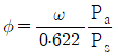
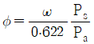
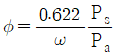
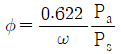
(정답률: 37%)

2. 난방방식 종류별 특징에 대한 설명으로 틀린 것은?
- 저온 복사난방 중 바닥 복사난방은 특히 실내기온의 온도분포가 균일하다.
- 온풍난방은 공장과 같은 난방에 많이 쓰이고 설비비가 싸며 예열시간이 짧다.
- 온수난방은 배관부식이 크고 워밍업 시간이 증가난방보다 짧으며 관의 동파 우려가 있다.
- 증기난방은 부하변동에 대응한 조절이 곤란하고 실온분포가 온수난방보다 나쁘다.
(정답률: 41%)
3. 덕트의 경로 중 단면적이 확대되었을 경우 압력변화에 대한 설명으로 틀린 것은?
- 전압이 증가한다.
- 동압이 감소한다.
- 정압이 증가한다.
- 풍속은 감소한다.
(정답률: 36%)
4. 건축의 평면도를 일정한 크기의 격자로 나누어서 이 격자의 구획내에 취출구, 흡입구, 조명, 스프링클러 등 모든 필요한 설비요소를 배치하는 방식은?
- 모듈방식
- 셔터방식
- 평커루버 방식
- 클래스 방식
(정답률: 49%)
5. 습공기의 가습 방법으로 가장 거리가 먼 것은?
- 순환수를 분무하는 방법
- 온수를 분무하는 방법
- 수증기를 분무하는 방법
- 외부공기를 가열하는 방법
(정답률: 50%)
6. 공기조화설비를 구성하는 열운반장치로서 공조기에 직접 연결되어 사용하는 펌프로 가장 거리가 먼 것은?
- 냉각수 펌프
- 냉수 순환펌프
- 온수 순환펌프
- 응축수(진공) 펌프
(정답률: 35%)
7. 저압 증기난방 배관에 대한 설명으로 옳은 것은?
- 하향공급식의 경우에는 상향공급식의 경우보다 배관경이 커야 한다.
- 상향공급식의 경우에는 하향공급식의 경우보다 배관경이 커야 한다.
- 상향공급식이나 하향공급식은 배관경과 무관하다.
- 하향공급식의 경우 상향공급식보다 워터해머를 일으키기 쉬운 배관법이다.
(정답률: 28%)
8. 현열만을 가하는 경우로 500m3/h의 건구온도(t1) 5℃, 상대습도(
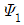
) 80%인 습공기를 공기 가열기로 가열하여 건구온도(t2) 43℃, 상대습도(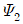
) 8%인 가열공기를 만들고자 한다. 이 때 필요한 열량(kW)은 얼마인가? (단, 공기의 비열은 1.01 kJ/kg·℃, 공기의 밀도는 1.2 kg/m3 이다.)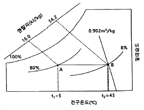
- 3.2
- 5.8
- 6.4
- 8.7
(정답률: 32%)
9. 다음 중 열전도율(W/m·℃)이 가장 작은 것은?
- 납
- 유리
- 얼음
- 물
(정답률: 30%)
10. 아래 표는 암모니아 냉매설비 운전을 위한 안전관리 절차서에 대한 설명이다. 이 중 틀린 내용은?
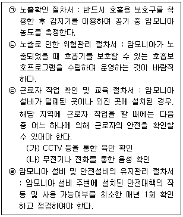
- ㉠
- ㉡
- ㉢
- ㉣
(정답률: 46%)
11. 외기에 접하고 있는 벽이나 지붕으로부터의 취득 열량은 건물 내외의 온도차에 의해 전도의 형식으로 전달된다. 그러나 외벽의 온도는 일사에 의한 복사열의 흡수로 외기온도보다 높게 되는데 이 온도를 무엇이라고 하는가?
- 건구오도
- 노점온도
- 상당외기온도
- 습구온도
(정답률: 41%)
12. 보일러의 스케일 방지방법으로 틀린 것은?
- 슬러지는 적절한 분출로 제거한다.
- 스케일 방지 성분인 칼슘의 생성을 돕기 위해 경도가 높은 물을 보일러수로 활용한다.
- 경수연화장치를 이용하여 스케일 생성을 방지한다.
- 인산염을 일정농도가 되도록 투입한다.
(정답률: 52%)
13. 습공기 선도상의 상태변화에 대한 설명으로 틀린 것은?
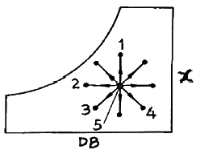
- 5 → 1 : 가습
- 5 → 2 : 현열냉각
- 5 → 3 : 냉각가습
- 5 → 4 : 가열감습
(정답률: 40%)
14. 다음 중 보온, 보냉, 방로의 목적으로 덕트 전체를 단열해야 하는 것은?
- 급기 덕트
- 배기 덕트
- 외기 덕트
- 배연 덕트
(정답률: 41%)
15. 어느 건물 서편의 유리 면적이 40m2 이다. 안쪽에 크림색의 베네시언 블라인드를 설치한 유리면으로부터 침입하는 열량(kW)은 얼마인가? (단, 외기 33℃, 실내공기 27℃, 유리는 1중이며, 유리의 열통과율은 5.9 W/m2·℃, 유리창의 복사량(Igr)은 608 W/m2, 차폐계수는 0.56 이다.)
- 15.0
- 13.6
- 3.6
- 1.4
(정답률: 21%)
16. T.A.B 수행을 위한 계측기기의 측정위치로 가장 적절하지 않은 것은?
- 온도 측정 위치는 증발기 및 응축기의 입·출구에서 최대한 가까운 곳으로 한다.
- 유량 측정 위치는 펌프의 출구에서 가장 가까운 곳으로 한다.
- 압력 측정 위치는 입·출구에 설치된 압력계용 탭에서 한다.
- 배기가스 온도 측정 위치는 연소기의 온도계 설치 위치 또는 시료 채취 출구를 이용한다.
(정답률: 36%)
17. 난방부하가 7559.5W인 어떤 방에 대해 온수난방을 하고자 한다. 방열기의 상당발열면적(m2)은 얼마인가? (단, 방열량은 표준방열량으로 한다.)
- 6.7
- 8.4
- 10.2
- 14.4
(정답률: 31%)
18. 에어와셔 내에서 물을 가열하지도 냉각하지도 않고 연속적으로 순환 분무시키면서 공기를 통과시켰을 때 공기의 상태변화는 어떻게 되는가?
- 건구온도는 높아지고, 습구온도는 낮아진다.
- 절대온도는 높아지고, 습구온도는 높아진다.
- 상대습도는 높아지고, 건구온도는 낮아진다.
- 건구온도는 높아지고, 상대습도는 낮아진다.
(정답률: 48%)
19. 크기에 비해 전열면적이 크므로 증기발생이 빠르고, 열효율도 좋지만 내부청소가 곤란하므로 양질의 보일러 수를 사용할 필요가 있는 보일러는?
- 입형 보일러
- 주철제 보일러
- 노통 보일러
- 연관 보일러
(정답률: 28%)
20. 온수난방과 비교하여 증기난방에 대한 설명으로 옳은 것은?
- 예열시간이 짧다.
- 실내온도의 조절이 용이하다.
- 방열기 표면의 온도가 낮아 쾌적한 느낌을 준다.
- 실내에서 상하온도차가 작으며, 방열량의 제어가 다른 난방에 비해 쉽다.
(정답률: 43%)
2과목: 공조냉동설계
21. 공기압축기에서 입구 공기의 온도와 압력은 각각 27℃, 100kPa 이고, 체적유량은 0.01m3/s 이다. 출구에서 압력이 400kPa이고, 이 압축기의 등엔트로피 효율이 0.8일 때, 압축기의 소요 동력(kW)은 얼마인가? (단, 공기의 정압비열과 기체상수는 각각 1 kJ/(kg·K), 0.287 kJ/(kg·K)이고, 비열비는 1.4 이다.)
- 0.9
- 1.7
- 2.1
- 3.8
(정답률: 25%)
22. 다음은 2단압축 1단팽창 냉동장치의 중간냉각기를 나타낸 것이다. 각 부에 대한 설명으로 틀린 것은?
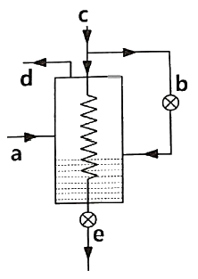
- a의 냉매관은 저단압축기에서 중간냉각기로 냉매가 유입되는 배관이다.
- b는 제1(중간냉각기 앞)팽창밸브이다.
- d부분의 냉매증기온도는 a부분의 냉매 증기온도보다 낮다.
- a와 c의 냉매 순환량은 같다.
(정답률: 32%)
23. 흡수식 냉동기의 냉매와 흡수제 조합으로 가장 적절한 것은?
- 물(냉매) - 프레온(흡수제)
- 암모니아(냉매) - 물(흡수제)
- 메틸아민(냉매) - 황산(흡수제)
- 물(냉매) - 디메틸에테르(흡수제)
(정답률: 45%)
24. 견고한 밀폐 용기 안에 공기가 압력 100kPa, 체적 1m3, 온도 20℃ 상태로 있다. 이 용기를 가열하여 압력이 150kPa 이 되었다. 최종상태의 온도와 가열량은 각각 얼마인가? (단, 공기는 이상기체이며, 공기의 정적비열은 0.717 kJ/(kg·K), 기체상수는 0.287 kJ/(kg·K) 이다.)
- 303.2K, 117.8kJ
- 303.2K, 124.9kJ
- 439.7K, 117.8kJ
- 439.7K, 124.9kJ
(정답률: 29%)
25. 밀폐계에서 기체의 압력이 500kPa로 일정하게 유지되면서 체적이 0.2m3에서 0.7m3로 팽창하였다. 이 과정 동안에 내부에너지의 증가가 60kJ 이라면 계가 한 일(kJ)은 얼마인가?
- 450
- 310
- 250
- 150
(정답률: 29%)
26. 이상기체가 등온과정으로 부피가 2배로 팽창할 때 한 일이 W1 이다. 이 이상기체가 같은 초기조건 하에서 폴리트로픽과정(n=2)으로 부피가 2배로 팽창할 때 W1 대비 한 일은 얼마인가?
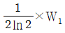
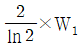
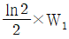
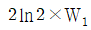
(정답률: 28%)
27. 증발기에 대한 설명으로 틀린 것은?
- 냉각실 온도가 일정한 경우, 냉각실 온도와 증발기내 냉매 증발온도의 차이가 작을수록 압축기 효율은 좋다.
- 동일조건에서 건식 증발기는 만액식 증발기에 비해 충전 냉매량이 적다.
- 일반적으로 건식 증발기 입구에서의 냉매의 증기가 액냉매에 섞여있고, 출구에서 냉매는 과열도를 갖는다.
- 만액식 증발기에서는 증발기 내부에 윤활유가 고일 염려가 없어 윤활유를 압축기로 보내는 장치가 필요하지 않다.
(정답률: 41%)
28. 다음 중 압력 값이 다른 것은?
- 1 mAq
- 73.56 mmHg
- 980.665 Pa
- 0.98 N/cm2
(정답률: 30%)
29. 냉동기에서 고압의 액체냉매와 저압의 흡입증기를 서로 열교환 시키는 열교환기의 주된 설치 목적은?
- 압축기 흡입증기 과열도를 낮추어 압축 효율을 높이기 위함
- 일종의 재생 사이클을 만들기 위함
- 냉매액을 과냉시켜 플래시 가스 발생을 억제하기 위함
- 이원냉동 사이클에서의 캐스케이드 응축기를 만들기 위함
(정답률: 24%)
30. 피스톤-실린더 시스템에 100kPa 의 압력을 갖는 1kg의 공기가 들어있다. 초기 체적은 0.5m3이고, 이 시스탬에 온도가 일정한 상태에서 열을 가하여 부피가 1.0m3이 되었다. 이 과정 중 시스템에 가해진 열량(kJ)은 얼마인가?
- 30.7
- 34.7
- 44.8
- 50.0
(정답률: 29%)
31. 다음 조건을 이용하여 응축기 설계시 1RT(3.86kW)당 응축면적(m2)은 얼마인가? (단, 온도차는 산술평균온도차를 적용한다.)
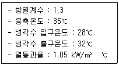
- 1.25
- 0.96
- 0.74
- 0.45
(정답률: 25%)
32. 역카르노 사이클로 300K와 240K 사이에서 작동하고 있는 냉동기가 있다. 이 냉동기의 성능계수는 얼마인가?
- 3
- 4
- 5
- 6
(정답률: 26%)
33. 체적 2500L인 탱크에 압력 294kPa, 오도 10℃의 공기가 들어 있다. 이 공기를 80℃까지 가열하는데 필요한 열량(kJ)은 얼마인가? (단, 공기의 기체상수는 0.287 kJ/(kg·K), 정적비열은 0.717 kJ/(kg·K) 이다.)
- 408
- 432
- 454
- 469
(정답률: 24%)
34. 다음 그림은 냉동사이클을 압력-엔탈피(P-h) 선도에서 나타낸 것이다. 다음 설명 중 옳은 것은/
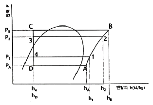
- 냉동사이클이 1-2-3-4-1에서 1-B-C-4-1로 변하는 경우 냉매 1kg당 압축일의 증가는 (hB-h1) 이다.
- 냉동사이클이 1-2-3-4-1에서 1-B-C-4-1로 변하는 경우 성적계수는 [(h1-h4)/(h2-h1)]에서 [(h1-h4)/(hB-h1)]로 된다.
- 냉동사이클이 1-2-3-4-1에서 A-2-3-D-A로 변하는 경우 증발압력이 P1에서 PA로 낮아져 압축비는 (P2/P1)에서 (P1/PA)로 된다.
- 냉동사이클이 1-2-3-4-1에서 A-2-3-D-A로 변하는 경우 냉동효과는 (h1-h4)에서 (hA-h4)로 감소하지만, 압축기 흡입증기의 비체적은 변하지 않는다.
(정답률: 25%)
35. 다음 중 증발기 내 압력을 일정하게 유지하기 위해 설치하는 팽창장치는?
- 모세관
- 정압식 자동 팽창밸브
- 플로트식 팽창밸브
- 수동식 팽창밸브
(정답률: 40%)
36. 외기온도 –5℃, 실내온도 18℃, 실내습도 70% 일 때, 벽 내면에서 결로가 생기지 않도록 하기 위해서는 내·외기 대류와 벽의 전도를 포함하여 전체 벽의 열통과율(W/(m2·K))은 얼마 이하이어야 하는가? (단, 실내공기 18℃,70% 일 때 노점온도는 12.5℃이며, 벽의 내면 열전달률은 7 W/(m2·K) 이다.)
- 1.91
- 1.83
- 1.76
- 1.67
(정답률: 20%)
37. 다음 이상기체에 대한 설명으로 옳은 것은?
- 이상기체의 내부에너지는 압력이 높아지면 증가한다.
- 이상기체의 내부에너지는 온도만의 함수이다.
- 이상기체의 내부에너지는 항상 일정하다.
- 이상기체의 내부에너지는 온도와 무관하다.
(정답률: 33%)
38. 다음 중 냉매를 사용하지 않는 냉동장치는?
- 열전 냉동장치
- 흡수식 냉동장치
- 교축팽창식 냉동장치
- 증기압축식 냉동장치
(정답률: 33%)
39. 냉동장치의 냉동능력이 38.8kW, 소요동력이 10kW 이었다. 이 때 응축기 냉각수의 입·출구 온도차가 6℃, 응축온도와 냉각수 온도와의 평균온도차가 8℃ 일 때, 수냉식 응축기의 냉각수량(L/min)은 얼마인가? (단, 물의 정압비열은 4.2 kJ/(kg·℃)이다.)
- 126.1
- 116.2
- 97.1
- 87.1
(정답률: 22%)
40. 열과 일에 대한 설명으로 옳은 것은?
- 열역학적 과정에서 열과 일은 모두 경로에 무관한 상태함수로 나타낸다.
- 일과 열의 단위는 대표적으로 Watt(W)를 사용한다.
- 열역학 제1법칙은 열과 일의 방향성을 제시한다.
- 한 사이클 과정을 지나 원래 상태로 돌아왔을 때 시스템에 가해진 전체 열량은 시스템이 수행한 전체 일의 양과 같다.
(정답률: 35%)
3과목: 시운전 및 안전관리
41. 산업안전보건법령상 냉동·냉장 창고시설 건설공사에 대한 유해위험방지계획서를 제출해야 하는 대상시설의 연면적 기준은 얼마인가?
- 3천제곱미터 이상
- 4천제곱미터 이상
- 5천제곱미터 이상
- 6천제곱미터 이상
(정답률: 32%)
42. 기계설비법령에 따른 기계설비의 착공 전 확인과 사용 전 검사의 대상 건축물 또는 시설물에 해당하지 않는 것은?
- 연면적 1만 제곱미터 이상인 건축물
- 목욕장으로 사용되는 바닥면적 합계가 500제곱미터 이상인 건축물
- 기숙사로 사용되는 바닥면적 합계가 1천제곱미터 이상인 건축물
- 판매시설로 사용되는 바닥면적 합계가 3천제곱미터 이상인 건축물
(정답률: 28%)
43. 고압가스안전관리법령에 따라 “냉매로 사용되는 가스 등 대통령령으로 정하는 종류의 고압가스”는 품질기준으로 고시하여야 하는데, 목적 또는 용량에 따라 고압가스에서 제외될 수 있다. 이러한 제외 기준에 해당되는 경우로 모두 고른 것은?
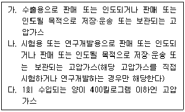
- 가, 나
- 가, 다
- 나, 다
- 가, 나, 다
(정답률: 33%)
44. 고압가스안전관리법령에 따라 일체형 냉동기의 조건으로 틀린 것은?
- 냉매설비 및 압축기용 원동기가 하나의 프레임 위에 일체로 조립된 것
- 냉동설비를 사용할 때 스톱밸브 조작이 필요한 것
- 응축기 유닛 및 증발유닛이 냉매배관으로 연결된 것으로 하루 냉동능력이 20톤 미만인 공조용 패키지에어콘
- 사용장소에 분할 반입하는 경우에는 냉매설비에 용접 또는 절단을 수반하는 공사를 하지 않고 재조립하여 냉동제조용으로 사용할 수 있는 것
(정답률: 33%)
45. 기계설비법령에 따라 기계설비성능점검업자는 기계설비성능점검업의 등록한 사항 중 대통령령으로 정하는 사항이 변경된 경우에는 변경등록을 하여야 한다. 만약 변경등록을 정해진 기간 내 못한 경우 1차 위반 시 받게 되는 행정처분 기준은?
- 등록취소
- 업무정지 2개월
- 업무정지 1개월
- 시정명령
(정답률: 35%)
46. 엘리베이터용 전동기의 필요 특성으로 틀린 것은?
- 소음이 작아야 한다.
- 기동 토크가 작아야 한다.
- 회전부분의 관성모멘트가 작아야 한다.
- 가속도의 변화비율이 일정 값이 되어야 한다.
(정답률: 37%)
47. 다음은 직류전동기의 토크특성을 나타내는 그래프이다. (A), (B), (C), (D) 에 알맞은 것은?
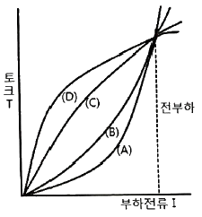
- (A) : 직권발전기, (B) : 가동복권발전기,
(C) : 분권발전기, (D) : 차동복권발전기 - (A) : 분권발전기, (B) : 직권발전기,
(C) : 가동복권발전기, (D) : 차동복권발전기 - (A) : 직권발전기, (B) : 분권발전기,
(C) : 가동복권발전기, (D) : 차동복권발전기 - (A) : 분권발전기, (B) : 가동복권발전기,
(C) : 직권발전기, (D) : 차동복권발전기
(정답률: 27%)
48. 서보전동기는 서보기구의 제어계 중 어떤 기능을 담당하는가?
- 조작부
- 검출부
- 제어부
- 비교부
(정답률: 26%)
49. 그림과 같은 유접점 논리회로를 간단히 하면?
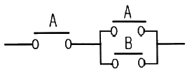
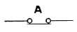
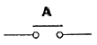
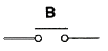
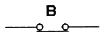
(정답률: 41%)
50. 10kVA 의 단상 변압기 2대로 V결선하여 공급할 수 있는 최대 3상 전력은 약 몇 kVA 인가?
- 20
- 17.3
- 10
- 8.7
(정답률: 29%)
51. 교류에서 역률에 관한 설명으로 틀린 것은?
- 역률은
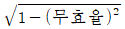
로 계산할 수 있다. - 역률을 이용하여 교류전력의 효율을 알 수 있다.
- 역률이 클수록 유효전력보다 무효전력이 커진다.
- 교류회로의 전압과 전류의 위상차에 코사인(cos)을 취한 값이다.
(정답률: 36%)
52. 아날로그 신호로 이루어지는 정량적 제어로서 일정한 목표값과 출력값을 비교·검토하여 자동적으로 행하는 제어는?
- 피드백 제어
- 시퀀스 제어
- 오픈루프 제어
- 프로그램 제어
(정답률: 42%)
53.
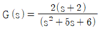
의 특성 방정식의 근은?- 2, 3
- -2, -3
- 2, -3
- -2, 3
(정답률: 40%)
54. R=8Ω, XL=2Ω, XC=8Ω의 직렬회로에 100V의 교류전압을 가할 때, 전압과 전류의 위상 관계로 옳은 것은?
- 전류가 전압보다 약 37° 뒤진다.
- 전류가 전압보다 약 37° 앞선다.
- 전류가 전압보다 약 43° 뒤진다.
- 전류가 전압보다 약 43° 앞선다.
(정답률: 27%)
55. 역률이 80%이고, 유효전력이 80kW 일 때, 피상전력(kVA)은?
- 100
- 120
- 160
- 200
(정답률: 37%)
56. 직류전압, 직류전류, 교류전압 및 저항 등을 측정할 수 있는 계측기기는?
- 검전기
- 검상기
- 메거
- 회로시험기
(정답률: 25%)
57. 자장 안에 놓여 있는 도선에 전류가 흐를 때 도선이 받는 힘은 F = BIℓsinθ(N)이다. 이것을 설명하는 법칙과 응용기기가 알맞게 짝지어진 것은?
- 플레밍의 오른손법칙 - 발전기
- 플레밍의 왼손법칙 - 전동기
- 플레밍의 왼손법칙 - 발전기
- 플레밍의 오른손법칙 – 전동기
(정답률: 32%)
58. 다음의 논리식을 간단히 한 것은?
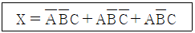
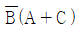
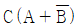
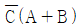
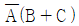
(정답률: 41%)
59. 전압을 인가하여 전동기가 동작하고 있는 동안에 교류전류를 측정할 수 있는 계기는?
- 후크 미터(클램프 메타)
- 회로시험기
- 절연저항계
- 어스 테스터
(정답률: 42%)
60. 그림과 같은 단자 1, 2 사이의 계전기접점회로 논리식은?
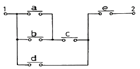
- {(a+b)d+c}e
- {(ab+c)d}+e
- {(a+b)c+d}e
- (ab+d)c+e
(정답률: 43%)
4과목: 유지보수 공사관리
61. 배수 배관이 막혔을 때 이것을 점검, 수리하기 위해 청소구를 설치하는데, 다음 중 설치 필요 장소로 적절하지 않은 곳은?
- 배수 수평 주관과 배수 수평 분기관의 분기점에 설치
- 배수관이 45° 이상의 각도로 방향을 전환하는 곳에 설치
- 길이가 긴 수평 배수관인 경우 관경이 100A 이하일 때 5m 마다 설치
- 배수 수직관의 제일 밑 부분에 설치
(정답률: 32%)
62. 증기와 응축수의 온도 차이를 이용하여 응축수를 배출하는 트랩은?
- 버킷 트랩
- 디스크 트랩
- 벨로즈 트랩
- 플로트 트랩
(정답률: 34%)
63. 정압기의 종류 중 구조에 따라 분류할 때 아닌 것은?
- 피셔식 정압기
- 액셜 플로우식 정압기
- 가스미터식 정압기
- 레이놀드식 정압기
(정답률: 33%)
64. 슬리브 시축 이음쇠에 대한 설명으로 틀린 것은?
- 신축량이 크고 신축으로 인한 응력이 생기지 않는다.
- 직선으로 이음하므로 설치 공간이 루프형에 비하여 적다.
- 배관에 곡선부가 있어도 파손이 되지 않는다.
- 장시간 사용 시 패킹의 마모로 누수의 원인이 된다.
(정답률: 27%)
65. 간접 가열 급탕법과 가장 거리가 먼 장치는?
- 증기 사일렌서
- 저탕조
- 보일러
- 고가수조
(정답률: 30%)
66. 강관의 종류와 KS 규격 기호가 바르게 짝지어진 것은?
- 배관용 탄소강관 : SPA
- 저온배관용 탄소강관 : SPPT
- 고압배관용 탄소강관 : SPTH
- 압력배관용 탄소강관 : SPPS
(정답률: 44%)
67. 폴리에틸렌 배관의 접합방법이 아닌 것은?
- 기볼트 접합
- 용착 슬리브 접합
- 인서트 접합
- 테이퍼 접합
(정답률: 26%)
68. 배관 접속 상태 표시 중 배관 A가 앞쪽으로 수직하게 구부러져 있음을 나타낸 것은?
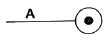
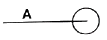
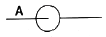
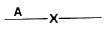
(정답률: 35%)
69. 증기보일러 배관에서 환수관의 일부가 파손된 경우 보일러 수의 유출로 안전수위 이하기 되어 보일러 수가 빈 상태로 되는 것을 방지하기 위해 하는 접속법은?
- 하트포드 접속법
- 리프트 접속법
- 스위블 접속법
- 슬리브 접속법
(정답률: 37%)
70. 도시가스 입상배관의 관 지름이 20mm 일 때 움직이지 않도록 몇 m 마다 고정 장치를 부착해야 하는가?
- 1m
- 2m
- 3m
- 4m
(정답률: 36%)
71. 증기난방 배관 시공법에 대한 설명으로 틀린 것은?
- 증기주관에서 지관을 분기하는 경우 관의 팽창을 고려하여 스위블 이음법으로 한다.
- 진공환수식 배관의 증기주관은 1/100~1/200 선상향 구배로 한다.
- 주형방열기는 일반적으로 벽에서 50~60mm 정도 떨어지게 설치한다.
- 보일러 주변의 배관방버에서는 증기관과 환수관 사이에 밸러스관을 달고, 하트포드 접속법을 사용한다.
(정답률: 36%)
72. 급수배관에서 수격현상을 방지하는 방법으로 가장 적절한 것은?
- 도피관을 설치하여 옥상탱크에 연결한다.
- 수압관을 갑자기 높인다.
- 밸브나 수도꼭지를 갑자기 열고 닫는다.
- 급폐쇄형 밸브 근처에 공기실을 설치한다.
(정답률: 35%)
73. 홈이 만들어진 관 또는 이음쇠에 고무링을 삽입하고 그 위에 하우징(housing)을 덮어 볼트와 너트로 죄는 이음방식은?
- 그루브 이음
- 그립 이음
- 플레어 이음
- 플랜지 이음
(정답률: 25%)
74. 90℃의 온수 2000kg/h을 필요로 하는 간접가열식 급탕탱크에서 가열관의 표면적(m2)은 얼마인가? (단, 급수의 온도 10℃, 급수의 비열은 4.2 kJ/kg·K, 가열관으로 사용할 동관의 전열량은 1.28 kW/m2·℃, 증기의 온도는 110℃ 이며 전열효율은 80% 이다.)
- 2.92
- 3.03
- 3.72
- 4.07
(정답률: 23%)
75. 급수배관에서 크로스 커넥션을 방지하기 위하여 설치하는 기구는?
- 체크밸브
- 워터햄머 어레스터
- 신축이음
- 버큠브레이커
(정답률: 31%)
76. 아래 강관 표시방법 중 “S – H”의 의미로 옳은 것은?
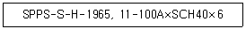
- 강관의 종류
- 제조회사명
- 제조방법
- 제품표시
(정답률: 26%)
77. 냉풍 또는 온풍을 만들어 각 실로 송풍하는 공기조화 장치의 구성 순서로 옳은 것은?
- 공기여과기 → 공기가열기 → 공기가습기 → 공기냉각기
- 공기가열기 → 공기여과기 → 공기냉각기 → 공기가습기
- 공기여과기 → 공기가습기 → 공기가열기 → 공기냉각기
- 공기여과기 → 공기냉각기 → 공기가열기 → 공기가습기
(정답률: 31%)
78. 롤러 서포트를 사용하여 배관을 지지하는 주된 이유는?
- 신축 허용
- 부식 방지
- 진동 방지
- 해체 용이
(정답률: 32%)
79. 배관의 끝을 막을 때 사용하는 이음쇠는?
- 유니언
- 니플
- 플러그
- 소켓
(정답률: 43%)
80. 다음 보온재 중 안전사용온도가 가장 낮은 것은?
- 규조토
- 암면
- 펄라이트
- 발포 폴리스티렌
(정답률: 44%)
습공기의 상대습도(ø)는 현재 습도와 포화습도(최대 습도)의 비율을 나타내는 값이다. 따라서 상대습도(ø)가 100%일 때, 습공기는 포화상태이며, 이때의 절대습도(ω)를 포화수증기압력(Ps)에 따라 계산할 수 있다.
즉, 상대습도(ø)가 100%일 때, 절대습도(ω)는 Ps에 의해 결정되므로 ""가 옳은 것이다.
그 외의 보기들은 상대습도와 절대습도의 관계식이 아니므로 틀린 것이다.